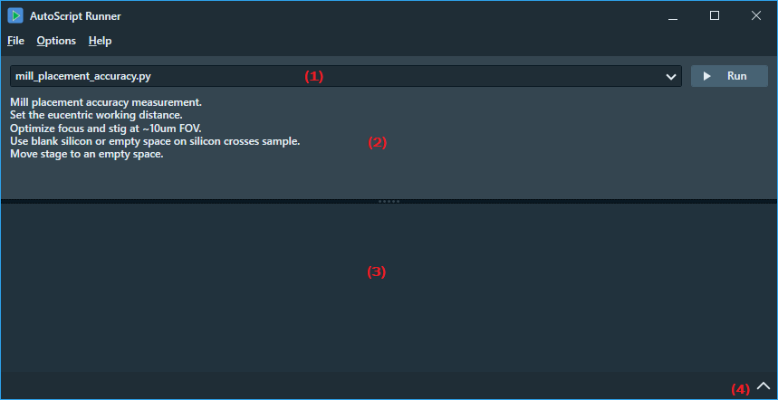
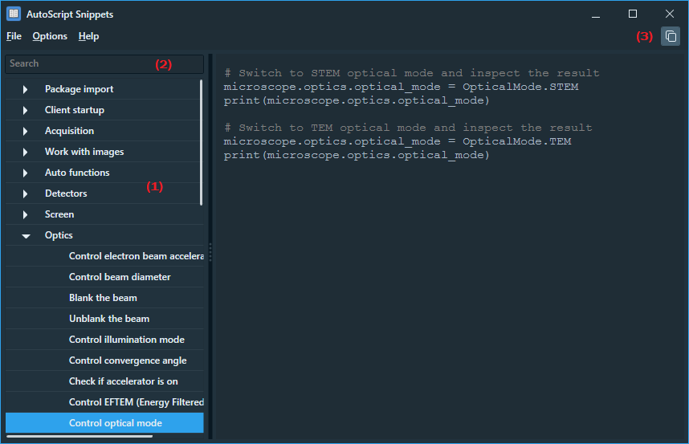
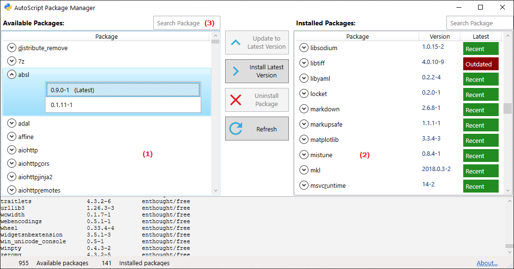

AutoScript Tooling
This chapter describes the three utilities that are included in AutoScript to enhance the overall user experience.
- AutoScript Runner
- AutoScript Snippets
- AutoScript Package Manager
1. AutoScript Runner
AutoScript Runner is a simple launcher for Python scripts that may or may not call AutoScript API functions.
One would prefer the Runner to PyCharm (or other) editor for running scripts that are already fully
tuned and do not require further editing.

A typical use case is to open a folder with multiple scripts using the File/Open Folder menu.
The Runner scans the folder for Python source files and identifies the startup scripts as those that contain AutoScript initialization
code or the function main(). These scripts are listed in the script selector (1).
If the script is documented with an introductory comment, this comment is displayed in the upper pane (2) for the selected script.
When you click the Run button, the script is executed using the Python interpreter configured in Settings.
All output is directed to the Output panel (3), which can be expanded or collapsed by clicking the arrow icon (4).
In the current version of Runner, it is not possible to read user input from the console.
2. AutoScript Snippets
AutoScript Snippets is a browser over database of simple Python code samples that demonstrate AutoScript API calls.
One of its powerful features is the full-text search capability.

In the left pane (1), the code snippets are arranged in a tree structure.
When you enter text in the search box (2), the set of snippets is filtered to show only those that contain
the entered text either in the name of the snippet or anywhere in the code of the snippet.
Use the Copy button (3) to copy the snippet to the clipboard.
Default snippets are stored in a text file at c:\ProgramData\Thermo Scientific AutoScript\CodeSnippets\SdbSnippets.py.
To add custom snippets, you can either edit the file or create a new one. The tool can display snippets from multiple source files
if you use the File/Append Snippets menu function.
3. AutoScript Package Manager
AutoScript Package Manager is a user interface extension for the Enthought Deployment Manager command line tool (Edm).
It allows you to manage installed packages without having to deal with Edm's command line interface.

On the left side (1), the tool displays the list of packages available on the Enthought Deployment Server in the "free" repository
thus ready for immediate download. On the right side (2), the list of packages currently installed in the AutoScript Python environment
is displayed, along with their versions and status indicator.
The status color is green if the package is most recent. The status is red if a newer version exists on the deployment server.
You can easily add a new package by first selecting it in the left pane and then clicking the
Install Latest Version button. Similarly, you can update or remove an installed package by selecting it in the
right pane and clicking the Update to Latest Version or Uninstall Package buttons.
The two search boxes at the top (3) help you quickly navigate to the desired package by removing all packages that
do not contain the entered text in their name.
Note that installing or updating a Python package resolves the whole chain of dependencies on other packages.
Therefore, adding or updating a single package may result in adding or updating multiple dependent packages.
You are prompted to review and approve the list of packages to be added or updated before the change is executed.
In the current version of AutoScript, the tool can only operate on the default Python environment called "AutoScript".
AutoScript Package Manager requires that the computer is connected to the Internet.